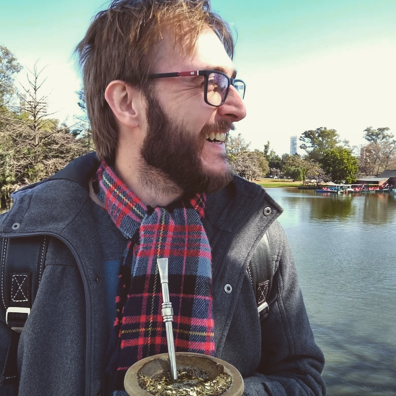

Sou Cientista de Dados, mas na verdade minha formação é em Física com ênfase em Fenomenologia de Partículas.
Atualmente trabalho como Cientista de Dados Pleno na Oi e faço parte de um time incrível! Meu principais interesses hoje são: aprendizado de máquina, inferência bayesiana, teste de hipótese e teste K-S.
Tu podes encontrar meu Curriculum Vitae bem como outras tantas informações no
LinkedIn.